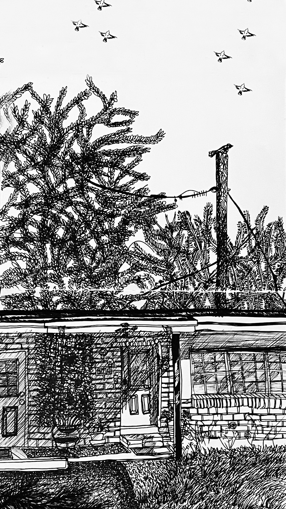
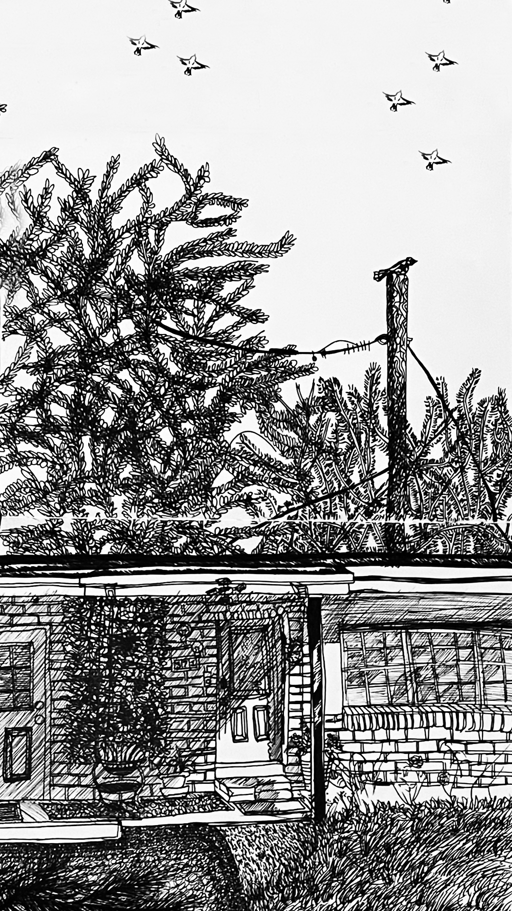
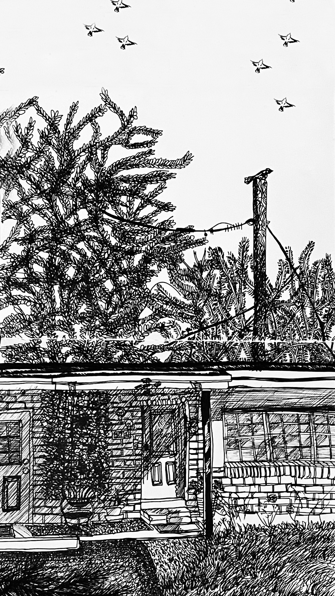

This website is for the World to see how beautiful life is on Earth: in my unique artistic and keen observation of details, line marking techniques to form shapes, values, and negative space. Beautiful World is a website that documents locations, illustrations (dreams), and fashion throughout my life. Furthermore, my grandmother's home (The background image: Broward County: USA) and my family home. Also, there be drawings from my travels by Miami-Dade County, Broward, and Gainesville, Florida. Additionally, the chapter is about a dream of a mysterious and fearless girl facing danger without looking back. There will be chapters: from my travels in the United States of America and International Countries. Each new location is documented in drawings in detail with some in color. The drawing media range from graphite, ink, and mixed-media. I take my time observing my surroundings. I pick the best composition and perceptions before sitting on a bench, under a tree, or even on a roof to get the best view and start drawing. I draw at certain times of day to have bold reflections of shapes and shadows. No matter the Weather: Cold, Hot, Sunny, Windy, etc. Friendly approach from stray animals. Such as Cats, Dogs, Roosters, Squirrels, Finches, Reptiles, and Bluejays nudge close or far clearance sight.
